LISTA TÉCNICA PARA ORÇAMENTO · LOJA BANDINI
Residência IC — Ivan e Carol
Revestimentos de piso e parede, louças e metais — quantitativos para orçamento e compra na mesma loja.
Data: 26/09/2026 · Revisão 00
Lidiane Barbosa e Isadora Ferrari
Revestimentos de piso e parede, louças e metais — quantitativos para orçamento e compra na mesma loja.
| Grupo | Linhas | Fornecedor |
|---|---|---|
| 01 Revestimentos (Portinari, CEUSA, Decortiles, Eliane) | 7 | Bandini |
| 02 Complementos (rejuntes, argamassa, perfil) | 5 | Bandini |
| 03 Louças e metais (Deca, Roca e outros) — 7 ambientes | 50 | Bandini |
| 04 Pedras, soleiras e opções | 5 | Pedreira / marmoraria |
| Cód. | Produto | Fabricante | Composição (m²) | m² líq. | m²/cx | Caixas | Preço/cx (R$) | Total (R$) | Observação |
|---|---|---|---|---|---|---|---|---|---|
| P01 · R01 · RP02 | Porcelanato Santorini OFW NAT 90 × 90 cm · 7,0 mm · retificado · Natural (NAT) | Portinari ref. A CONFIRMAR na loja | Piso P01: 197,67 Rodapé R01 159,10 m × 0,08: 12,73 Parede RP02: 32,16 | 242,56 | 2,43 | 100 | Rodapé recortado das mesmas peças (perda de corte não incluída). Rejunte cor Corda, junta seca. | ||
| P02 · R02 | Porcelanato Santorini SGR HARD (Stone Gray) 90 × 90 cm · 8,0 mm · retificado · HARD (antiderrapante) | Portinari ref. 62928 | Piso P02 (varanda + deck): 96,01 Rodapé R02 30,04 m × 0,08: 2,40 | 98,41 | 1,62 | 61 | Rejunte cor Corda, junta seca. | ||
| P02 (opcional) | Porcelanato Santorini SGR HARD — Corredor Lateral Externo 90 × 90 cm · 8,0 mm · HARD (antiderrapante) | Portinari ref. 62928 | Corredor Lateral Externo: 23,93 | 23,93 | 1,62 | 15 | Somente se o corredor for em P02 (alternativa: piso intertravado drenante, fora da Bandini). | ||
| RP03 | Porcelanato Confete WH NAT 100 × 100 cm · 9,0 mm · retificado · Natural | CEUSA ref. 5041209A | Banheiro Casal — fundo do box + nicho: 5,41 | 5,41 | 2,00 | 3 | Listado no site da Bandini (CONFET WH NAT 41209). | ||
| RP04 | Porcelanato Confete PK NAT (Pink) 100 × 100 cm · 9,0 mm (A CONFIRMAR) · Natural | CEUSA ref. 5041210A | WC 01 e WC 02 — fundo do box + nicho: 8,07 | 8,07 | 2,00 | 5 | FORMATO A CONFIRMAR: a imagem do projeto mostra peças pequenas. m²/caixa conforme o 100 × 100. | ||
| RP05 | Revestimento Fatto Oliva AC 30 × 90 cm · Acetinado | Decortiles ref. SC 8068139 | Banheiro Externo — fundo do box + nicho: 4,33 | 4,33 | A CONFIRMAR | — | m² por caixa A CONFIRMAR com a loja. | ||
| RP07 | Revestimento Eliane Forma Branco AC (fundo da marcenaria) 30 × 40 cm · 6,5 mm · Acetinado | Eliane ref. SC 8039383 | Cozinha — paredes esquerda e superior: 23,02 | 23,02 | 1,92 | 12 | Junta 2 mm (fabricante). | ||
| Total revestimentos (sem a linha opcional) | |||||||||
| Item | Onde | Especificação | Qtd. | Preço unit. (R$) | Total (R$) |
|---|---|---|---|---|---|
| Rejunte cor Corda | P01, P02, R01, R02, RP02 (junta seca — fabricante Portinari) | Marca e tipo a definir (proposta: NBR 14992 tipo II em áreas externas e molhadas) | A CONFIRMAR | ||
| Rejunte Confete Pink | RP04 | Cores sugeridas pelo fabricante: Quartzolit Preto Grafite, Rejuntabras Marfim ou Quartzobras Castor | A CONFIRMAR | ||
| Rejunte Confete WH, Fatto Oliva e Eliane Forma | RP03, RP05, RP07 | Cor e tipo A CONFIRMAR | A CONFIRMAR | ||
| Argamassa colante | Todos os revestimentos | Tipo e consumo conforme fabricante (porcelanato grande formato; áreas externas) | A CONFIRMAR | ||
| Perfil metálico em L (cantoneira) | Desníveis entre pisos iguais (detalhe D2) | Sem desníveis documentados — quantidade A CONFIRMAR | A CONFIRMAR |
| 01 · WC 01 E WC 02 — Banho 1 (Suíte 1) e Banho 2 (Suíte 2) — mesma especificação; quantidades somam os dois | |||||||||
|---|---|---|---|---|---|---|---|---|---|
| Foto | Item | Descrição técnica | Marca/linha | Referência | Cor/acab. | Qtd. | Preço unit. (R$) | Total (R$) | Observação |
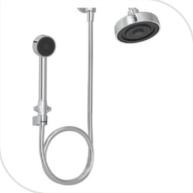 | Chuveiro | Kit chuveiro de parede com desviador e ducha manual | Deca / Acqua Plus | — | Cromado | 2 | |||
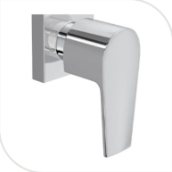 | Chuveiro | Acabamento de registro para misturador de duas alavancas (água quente e fria) | Deca / Level | 4900.C26.GD | Cromado | 2 | Compatível com o kit Acqua Plus. | ||
| Ducha higiênica | Ducha higiênica com registro e derivação | Deca / Level | 1984.C26.ACT | Cromado | 2 | ||||
| Bacia sanitária | Bacia sanitária com caixa acoplada, acionamento por botão duplo | Roca / ONA | — | Padrão do fabricante | 2 | Caixa acoplada: dispensa válvula de descarga; exige ponto de água fria na entrada da caixa. | |||
| Bacia sanitária | Assento sanitário original da linha | Roca / ONA | — | Padrão do fabricante | 2 | ||||
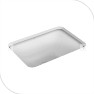 | Lavatório | Cuba de embutir retangular 50×40 cm, louça | Deca | — | Branca | 2 | Bancada com recorte para cuba de embutir. | ||
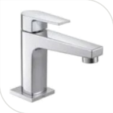 | Lavatório | Torneira de mesa para lavatório, bica baixa | Deca / Level | 1193.C26 | Cromado | 2 | Torneira convencional (definido). | ||
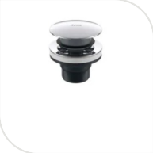 | Lavatório | Válvula de escoamento tipo click para lavatório | Deca | 1601.C.CLI | Cromado | 2 | |||
| Lavatório | Engate flexível com malha de aço inox trançado | Deca | 4607.C.030 ou 4607.C.040 | Cromado | 2 | Comprimento (30 ou 40 cm) a definir em obra. | |||
| Acessórios | Porta-toalha barra simples | Deca / You | — | Cromado | 2 | ||||
| Acessórios | Porta-toalha de rosto / cabide | Deca / You | — | Cromado | 2 | ||||
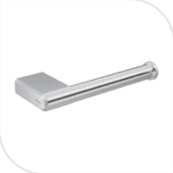 | Acessórios | Papeleira | Deca / You | — | Cromado | 2 | |||
| 02 · BANHEIRO CASAL — Banho 3 — Suíte Master | |||||||||
|---|---|---|---|---|---|---|---|---|---|
| Foto | Item | Descrição técnica | Marca/linha | Referência | Cor/acab. | Qtd. | Preço unit. (R$) | Total (R$) | Observação |
| Chuveiro | Kit chuveiro de parede com desviador e ducha manual | Deca / Acqua Plus | — | Cromado | 1 | ||||
 | Chuveiro | Acabamento de registro para misturador de duas alavancas (água quente e fria) | Deca / Level | 4900.C26.GD | Cromado | 1 | Compatível com o kit Acqua Plus. | ||
| Ducha higiênica | Ducha higiênica com registro e derivação | Deca / Level | 1984.C26.ACT | Cromado | 1 | ||||
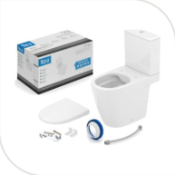 | Bacia sanitária | Bacia sanitária com caixa acoplada, acionamento por botão duplo | Roca / ONA | — | Padrão do fabricante | 1 | Caixa acoplada: dispensa válvula de descarga; exige ponto de água fria na entrada da caixa. | ||
| Bacia sanitária | Assento sanitário original da linha | Roca / ONA | — | Padrão do fabricante | 1 | ||||
| Lavatório | Cuba de embutir retangular 50×40 cm, louça | Deca | — | Branca | 1 ou 2 | Depende de a bancada ser simples ou dupla — A CONFIRMAR. | |||
| Lavatório | Torneira de mesa para lavatório, bica baixa | Deca / Level | 1193.C26 | Cromado | 1 por cuba | ||||
| Lavatório | Válvula de escoamento tipo click para lavatório | Deca | 1601.C.CLI | Cromado | 1 por cuba | ||||
| Lavatório | Engate flexível com malha de aço inox trançado | Deca | 4607.C.030 ou 4607.C.040 | Cromado | 1 por cuba | Comprimento (30 ou 40 cm) a definir em obra. | |||
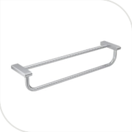 | Acessórios | Porta-toalha barra dupla 60 cm | Deca / You | 2042.C104.060 | Cromado | 1 | |||
| Acessórios | Porta-toalha de rosto / cabide | Deca / You | — | Cromado | 1 | ||||
| Acessórios | Papeleira | Deca / You | — | Cromado | 1 | ||||
| 03 · BANHEIRO EXTERNO — Banho 4 — WC Externo | |||||||||
|---|---|---|---|---|---|---|---|---|---|
| Foto | Item | Descrição técnica | Marca/linha | Referência | Cor/acab. | Qtd. | Preço unit. (R$) | Total (R$) | Observação |
| Chuveiro | Kit chuveiro de parede com desviador e ducha manual | Deca / Acqua Plus | — | Cromado | 1 | ||||
| Chuveiro | Acabamento de registro para misturador de duas alavancas (água quente e fria) | Deca / Level | 4900.C26.GD | Cromado | 1 | Compatível com o kit Acqua Plus. | |||
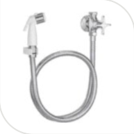 | Ducha higiênica | Ducha higiênica com registro e derivação | Deca / Level | 1984.C26.ACT | Cromado | 1 | |||
| Bacia sanitária | Bacia sanitária com caixa acoplada, acionamento por botão duplo | Roca / ONA | — | Padrão do fabricante | 1 | Caixa acoplada: dispensa válvula de descarga; exige ponto de água fria na entrada da caixa. | |||
| Bacia sanitária | Assento sanitário original da linha | Roca / ONA | — | Padrão do fabricante | 1 | ||||
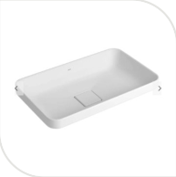 | Lavatório | Cuba de apoio/sobrepor retangular, cerâmica | Deca / Slim | — | Verde fosco | 1 | Exige torneira de bica alta. Confirmar a cor verde fosco com a loja (foto em branco, representativa). | ||
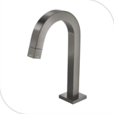 | Lavatório | Torneira de mesa bica alta para lavatório | Deca / Tube | 1198.GF.TUB.MT | Dark Antracite (fosco) | 1 | Única peça neste acabamento. Confirmar se o código 1198 (bica alta) está disponível; foto da 1197 (bica baixa). | ||
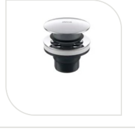 | Lavatório | Válvula de escoamento tipo click para lavatório | Deca | 1601.C.CLI | Cromado | 1 | Não fabricada em Dark Antracite; mantido cromado (decisão do cliente). | ||
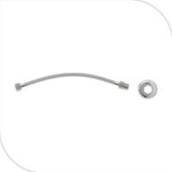 | Lavatório | Engate flexível com malha de aço inox trançado | Deca | 4607.C.030 ou 4607.C.040 | Cromado | 1 | Comprimento (30 ou 40 cm) a definir em obra. | ||
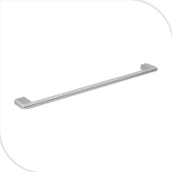 | Acessórios | Porta-toalha barra simples | Deca / You | — | Cromado | 1 | |||
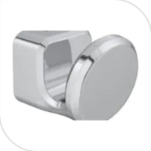 | Acessórios | Porta-toalha de rosto / cabide | Deca / You | — | Cromado | 1 | |||
| Acessórios | Papeleira | Deca / You | — | Cromado | 1 | ||||
| 04 · COZINHA | |||||||||
|---|---|---|---|---|---|---|---|---|---|
| Foto | Item | Descrição técnica | Marca/linha | Referência | Cor/acab. | Qtd. | Preço unit. (R$) | Total (R$) | Observação |
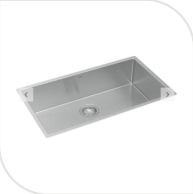 | Cuba | Cuba de embutir retangular 75×40 cm, aço inox | Deca / Suprema | CC67075INX | Inox | 1 | |||
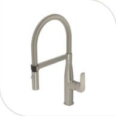 | Torneira | Misturador monocomando de mesa para cozinha | Deca | 2275.INX | Inox | 1 | |||
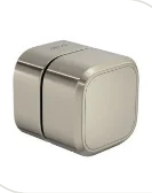 | Registro | Registro de gaveta até 1", acabamento quadrado | Deca | 4900.INX105.PQ | Inox | 1 | Instalado sob a bancada. | ||
 | Sifão/engates | Kit sifão articulado 1½" + engates flexíveis para cuba de cozinha | Deca | 1682.C.112 (referência) | Cromado ou inox | 1 | Referência exata compatível com CC67075INX (e versão inox) a confirmar com a loja. | ||
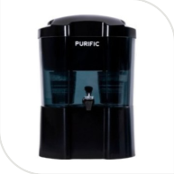 | Filtro | Filtro/purificador de água com retenção de metais pesados | Purific / Camadas 10 | — | Torneira: escolher cor | 1 | Acompanha torneira própria. Ponto de água a 1,00 m. Verificar se a Bandini revende. | ||
| 05 · VARANDA GOURMET — Área Gourmet | |||||||||
|---|---|---|---|---|---|---|---|---|---|
| Foto | Item | Descrição técnica | Marca/linha | Referência | Cor/acab. | Qtd. | Preço unit. (R$) | Total (R$) | Observação |
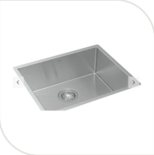 | Cuba | Cuba de embutir retangular 50×40 cm, aço inox | Deca / Suprema | CC66050INX | Inox | 1 | |||
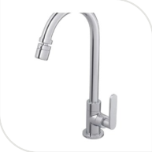 | Torneira | Torneira de mesa bica móvel | Deca / Flex Plus | 1167.C21 | Cromado | 1 | |||
| Registro | Registro de gaveta, acabamento | Deca / Level | 4900.C26.GD | Cromado | 1 | Mesmo acabamento do restante da casa. | |||
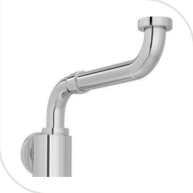 | Sifão/engates | Kit sifão articulado 1½" + engates flexíveis para cuba de cozinha | Deca | 1682.C.112 (referência) | Cromado ou inox | 1 | Referência exata compatível com CC66050INX a confirmar com a loja. | ||
| 06 · LAVANDERIA — Área de Serviço | |||||||||
|---|---|---|---|---|---|---|---|---|---|
| Foto | Item | Descrição técnica | Marca/linha | Referência | Cor/acab. | Qtd. | Preço unit. (R$) | Total (R$) | Observação |
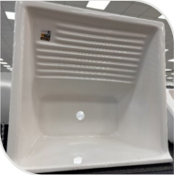 | Tanque | Tanque moldado 60×57 cm, 39 L, marmorizado sintético | I.Corso / Premium | — | Branco | 1 | Verificar se a Bandini revende. | ||
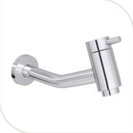 | Torneira | Torneira de parede bica longa para tanque | Deca / Link | 1178.C.LNK | Cromado | 1 | |||
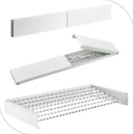 | Varal | Varal de parede dobrável tipo sanfona, 7 varetas, 120 cm | Varal Mágico | — | Alumínio branco | 1 | Fixação em parede com estrutura para o peso. Verificar se a Bandini revende. | ||
| 07 · ÁREA EXTERNA / PISCINA | |||||||||
|---|---|---|---|---|---|---|---|---|---|
| Foto | Item | Descrição técnica | Marca/linha | Referência | Cor/acab. | Qtd. | Preço unit. (R$) | Total (R$) | Observação |
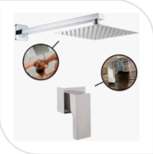 | Ducha externa | Kit chuveirão de parede/piscina com acabamento de registro, só água fria | Deca | A CONFIRMAR | Cromado | 1 | Referência exata do kit completo a fechar com a loja. | ||
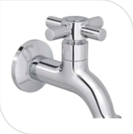 | Torneira de jardim | Torneira para jardim e tanque com adaptador para mangueira | Deca / Izy | 1153.C37 | Cromado | 1 | |||
| Referência | Descrição | Marca/linha | Cor/acab. | Qtd. total | Ambientes | Preço unit. (R$) | Total (R$) |
|---|---|---|---|---|---|---|---|
| — | Kit chuveiro de parede com desviador e ducha manual | Deca / Acqua Plus | Cromado | 4 | WC 01 e WC 02, Banheiro Casal, Banheiro Externo | ||
| 4900.C26.GD | Acabamento de registro (chuveiros dos banheiros e registro da Varanda Gourmet) | Deca / Level | Cromado | 5 | WC 01 e WC 02, Banheiro Casal, Banheiro Externo, Varanda Gourmet | ||
| 1984.C26.ACT | Ducha higiênica com registro e derivação | Deca / Level | Cromado | 4 | WC 01 e WC 02, Banheiro Casal, Banheiro Externo | ||
| — | Bacia sanitária com caixa acoplada, acionamento por botão duplo | Roca / ONA | Padrão do fabricante | 4 | WC 01 e WC 02, Banheiro Casal, Banheiro Externo | ||
| — | Assento sanitário original da linha | Roca / ONA | Padrão do fabricante | 4 | WC 01 e WC 02, Banheiro Casal, Banheiro Externo | ||
| — | Cuba de embutir retangular 50×40 cm, louça | Deca | Branca | 3 ou 4 | WC 01 e WC 02, Banheiro Casal | ||
| 1193.C26 | Torneira de mesa para lavatório, bica baixa | Deca / Level | Cromado | 3 ou 4 | WC 01 e WC 02, Banheiro Casal | ||
| 1601.C.CLI | Válvula de escoamento tipo click para lavatório | Deca | Cromado | 4 ou 5 | WC 01 e WC 02, Banheiro Casal, Banheiro Externo | ||
| 4607.C.030 ou 4607.C.040 | Engate flexível com malha de aço inox trançado | Deca | Cromado | 4 ou 5 | WC 01 e WC 02, Banheiro Casal, Banheiro Externo | ||
| — | Porta-toalha barra simples | Deca / You | Cromado | 3 | WC 01 e WC 02, Banheiro Externo | ||
| — | Porta-toalha de rosto / cabide | Deca / You | Cromado | 4 | WC 01 e WC 02, Banheiro Casal, Banheiro Externo | ||
| — | Papeleira | Deca / You | Cromado | 4 | WC 01 e WC 02, Banheiro Casal, Banheiro Externo | ||
| 2042.C104.060 | Porta-toalha barra dupla 60 cm | Deca / You | Cromado | 1 | Banheiro Casal | ||
| — | Cuba de apoio/sobrepor retangular, cerâmica | Deca / Slim | Verde fosco | 1 | Banheiro Externo | ||
| 1198.GF.TUB.MT | Torneira de mesa bica alta para lavatório | Deca / Tube | Dark Antracite (fosco) | 1 | Banheiro Externo | ||
| CC67075INX | Cuba de embutir retangular 75×40 cm, aço inox | Deca / Suprema | Inox | 1 | Cozinha | ||
| 2275.INX | Misturador monocomando de mesa para cozinha | Deca | Inox | 1 | Cozinha | ||
| 4900.INX105.PQ | Registro de gaveta até 1", acabamento quadrado | Deca | Inox | 1 | Cozinha | ||
| 1682.C.112 (referência) | Kit sifão articulado 1½" + engates flexíveis para cuba de cozinha | Deca | Cromado ou inox | 2 | Cozinha, Varanda Gourmet | ||
| — | Filtro/purificador de água com retenção de metais pesados | Purific / Camadas 10 | Torneira: escolher cor | 1 | Cozinha | ||
| CC66050INX | Cuba de embutir retangular 50×40 cm, aço inox | Deca / Suprema | Inox | 1 | Varanda Gourmet | ||
| 1167.C21 | Torneira de mesa bica móvel | Deca / Flex Plus | Cromado | 1 | Varanda Gourmet | ||
| — | Tanque moldado 60×57 cm, 39 L, marmorizado sintético | I.Corso / Premium | Branco | 1 | Lavanderia | ||
| 1178.C.LNK | Torneira de parede bica longa para tanque | Deca / Link | Cromado | 1 | Lavanderia | ||
| — | Varal de parede dobrável tipo sanfona, 7 varetas, 120 cm | Varal Mágico | Alumínio branco | 1 | Lavanderia | ||
| A CONFIRMAR | Kit chuveirão de parede/piscina com acabamento de registro, só água fria | Deca | Cromado | 1 | Área externa / piscina | ||
| 1153.C37 | Torneira para jardim e tanque com adaptador para mangueira | Deca / Izy | Cromado | 1 | Área externa / piscina | ||
| Total louças e metais | |||||||
| Item | Fornecedor | Qtd. líquida | Onde | Orçamento (R$) |
|---|---|---|---|---|
| Pedra Moledo | Pedreira | 32,93 m² | Sala: fachadas sul 12,48 e leste 8,21 m² (h 3,20 m, desconta J01) + parede da TV 12,24 m² (h 3,40 m) | |
| Travertino Rock Face | Pedreira | 6,51 m² | Churrasqueira (frente e lateral) + faixa da bancada da varanda | |
| Pedra portuguesa branca | Fornecedor de pedras | 150,10 m² | Rampa 37,00 + acesso externo 15,03 + calçada 98,07 m² | |
| Soleira mármore Itaúnas, baguete 5 cm | Marmoraria | 24,90 m | 9 peças: T01 0,80 · T02 1,80 · T03 3,00 · T04 3,00 · T05 2,70 · T06 0,80 · T07 0,90 · T08 7,40 · T09 4,50 | |
| Piso intertravado drenante (opcional) | A definir | 23,93 m² | Somente se o Corredor Lateral Externo não for em P02 |